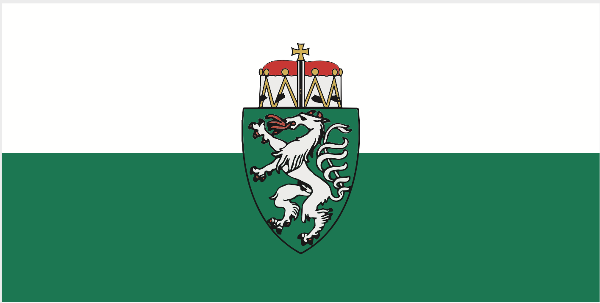

Graz se često naziva i skrivenim draguljem Austrije jer, iako nije velik kao Beč, nudi izuzetno bogato iskustvo za posjetioce. Grad je kroz istoriju bio pod uticajem različitih kultura, što se jasno vidi u njegovoj arhitekturi i načinu života. Posebno je zanimljivo to što se na svakom koraku mogu vidjeti detalji iz prošlih vijekova, od ukrašenih fasada do starih dvorišta i prolaza. Jedna od posebnosti Graza je Murinsel, neobična umjetnička platforma na rijeci koja služi kao prostor za odmor i kulturna dešavanja. Takođe, tu je i Graz Katedrala, impresivna katedrala koja svjedoči o dugoj istoriji grada i njegovom značaju kroz vijekove. U blizini se nalazi i Eggenberg dvorac, veličanstvena barokna palata okružena velikim parkom, koja je jedna od najvažnijih kulturnih znamenitosti u regiji. Graz je poznat i po svojoj opuštenoj atmosferi i kvalitetu života. Grad je veoma čist, uređen i prilagođen pješacima i biciklistima, što ga čini idealnim za istraživanje bez žurbe. Brojni kafići, restorani i male prodavnice daju mu poseban šarm i čine ga prijatnim mjestom za boravak. Tokom godine održavaju se različiti festivali, filmske projekcije i kulturni događaji koji dodatno obogaćuju život u gradu. Sve ove karakteristike čine Graz mjestom koje uspješno spaja istoriju, umjetnost i savremeni način života
